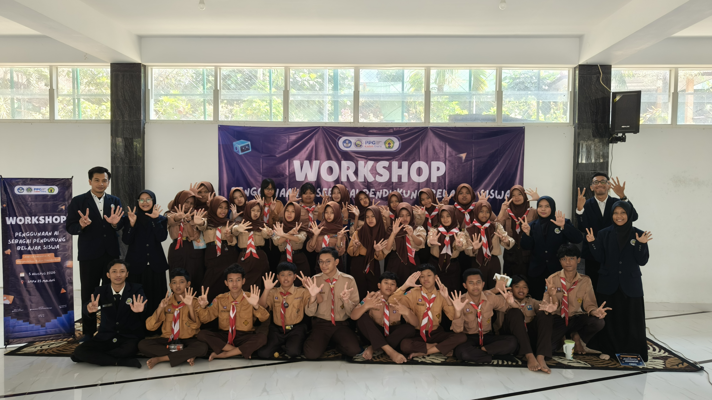

Kumpulan Mata Kuliah
Dokumentasi pembelajaran, refleksi, dan pengalaman praktik selama Semester 2 PPG Prajabatan Informatika.
Pembelajaran Akademik
Mata Kuliah Semester 2
Berikut lima mata kuliah yang ditempuh pada Semester 2.
01
Pembelajaran Sosial EmosionalPenguatan kompetensi sosial dan emosional murid
02
Pembelajaran Mendalam dan Asesmen LanjutPerancangan pembelajaran mendalam dan asesmen lanjutan
03
Projek KepemimpinanPengembangan kepemimpinan dan inovasi pendidikan
04
PPL MandiriPraktik pengalaman lapangan mandiri di sekolah
05
Etika dan Profesionalisme GuruPenguatan etika, integritas, dan profesionalitas pendidik
Galeri Kegiatan
Dokumentasi Kegiatan
Momen-momen berharga selama menjalani Semester 2 PPG Prajabatan Informatika.

Koordinasi dengan DPL

Koordinasi dengan Guru Pamong

Penyerahan PPL Mandiri di SMPN 18 Malang

Praktik Mengajar

Koordinasi dengan Guru Pamong

Kelas Online Pembelajaran Mendalam dan Asesmen Lanjut

Kelas Kolaborasi dengan Guru Praktisi_PMAL

Evaluasi Lesson Study

Proyek Kepemimpinan

Kolaborasi dengan guru praktisi_EPG

Kolaborasi dengan guru praktisi_PSE

Mata Kuliah Proyek Kepemimpinan